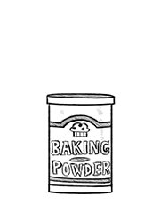

baking powder
Baking powder is a chemical leavening agent made from a combination of a carbonate or bicarbonate and a weak acid. The acid doesn't react prematurely to the carbonate due to the added cornstarch. Baking powder helps give rise and volume to baked goods by releasing carbon dioxide gas into the batter by way of an acid-base reaction. There are two types: single and double-acting. Double acting acid reacts in a wet mixture with baking soda at room temperature, while slow-acting only reacts when heated.
Baking powder is used instead of yeast in some recipes to avoid fermentation flavors, and to speed the production of baked goods (as carbon dioxide gas is released quicker with an acid-base reaction). Generally, 1 tsp of baking powder is used to raise a mix of 1 cup of flour and 1 cup of liquid. If the recipe is acidic (lemon juice, citrus, buttermilk etc) some of the baking powder should be replaced with baking soda, for example: 1 cup flour + 1 cup buttermilk requires 1/2 tsp of baking powder and 1/4 tsp of baking soda.
To test if your baking powder is still active, add 4 g (1 tsp) to about 250ml (1 cup) of hot water. If it is still fresh, it will start bubbling quite a bit. If it does not bubble, throw it out and get a new container.